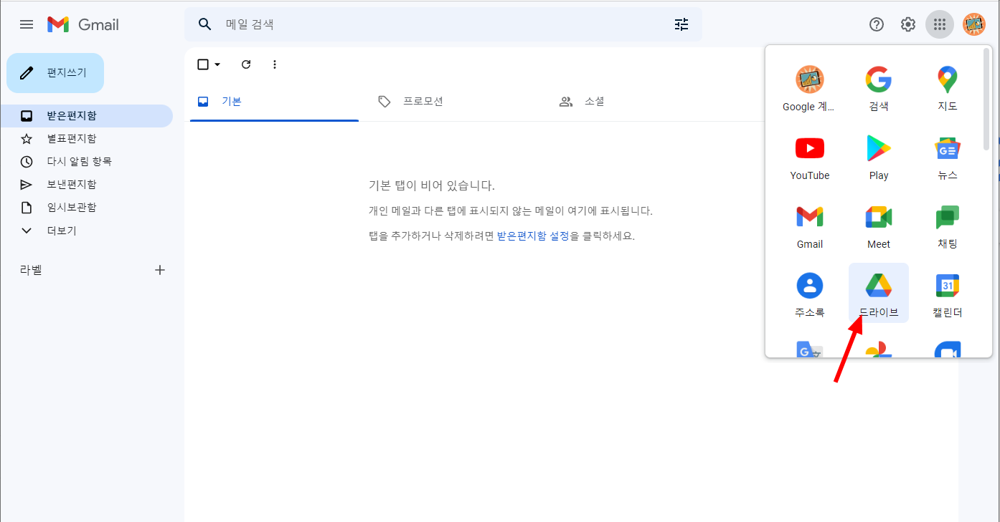
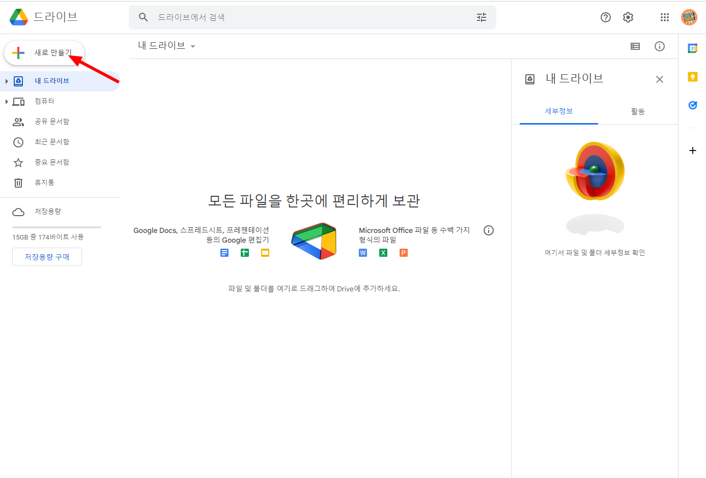
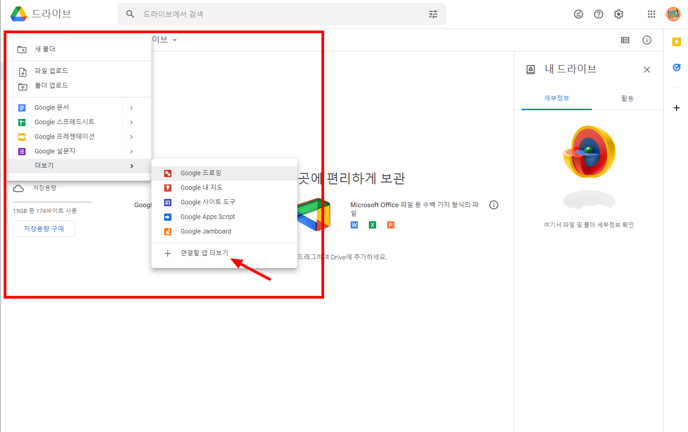
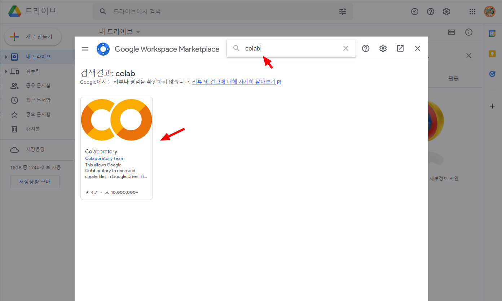
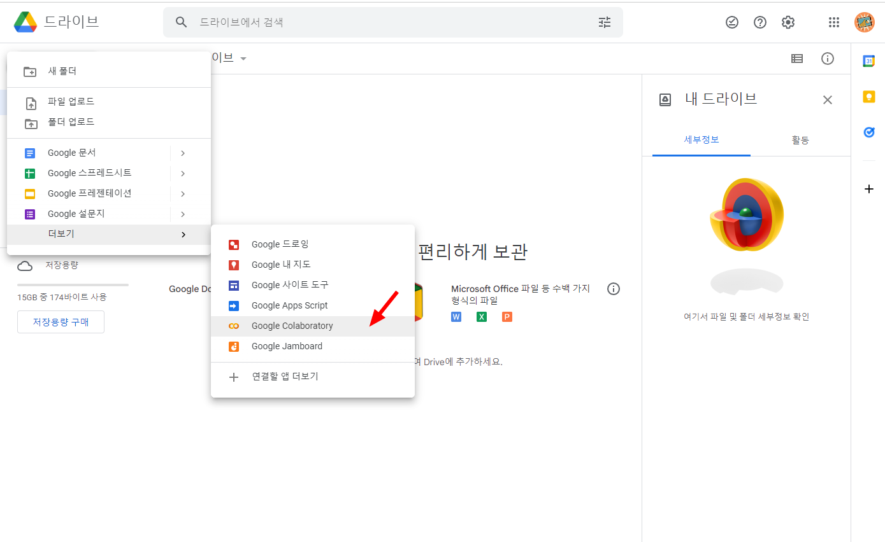
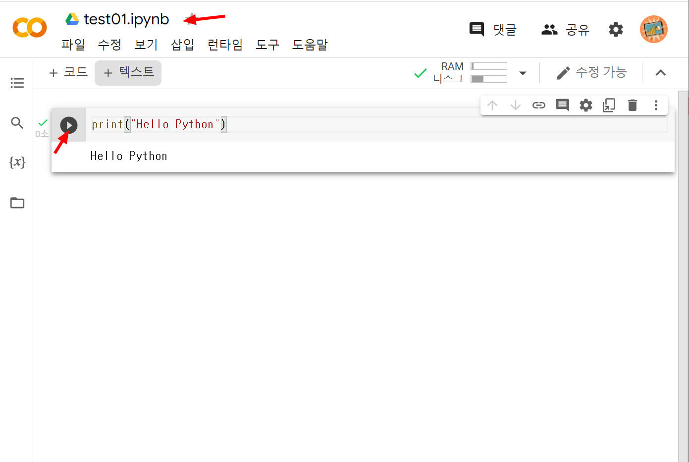
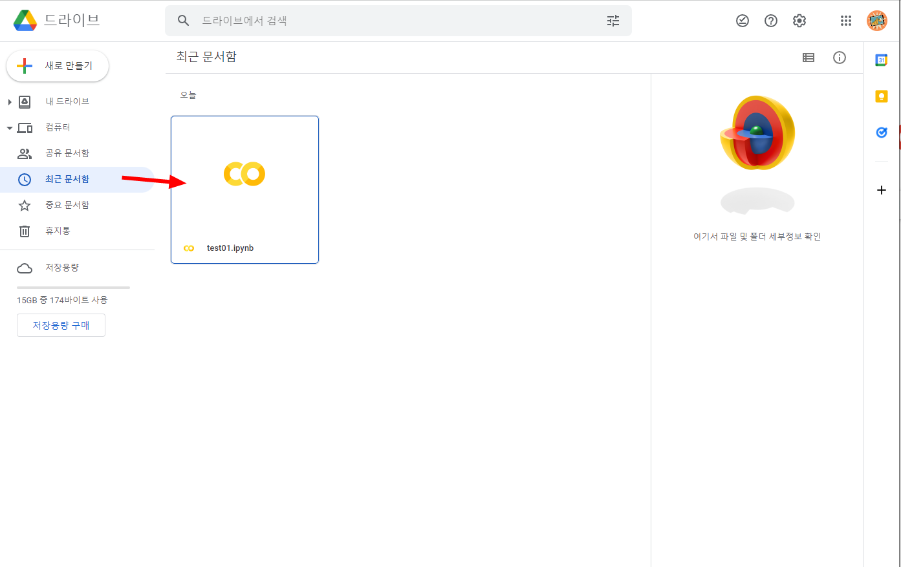
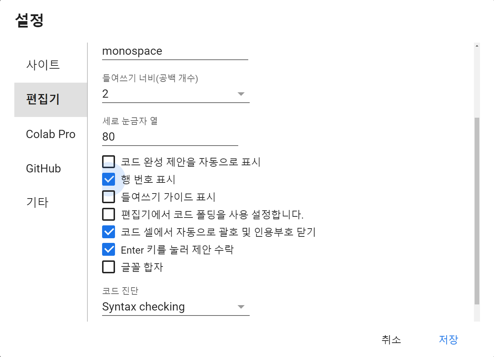
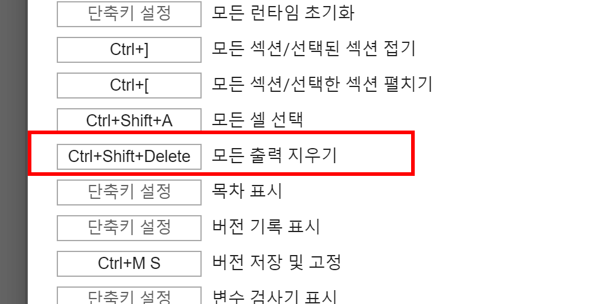

1. Colab이란?
| 이미지 | 설명 |
|---|---|
| Google Colab은 웹 브라우저에서 Python 코드를 실행할 수 있는 실습 환경입니다. |
Colab은 별도의 Python 설치 없이 사용할 수 있는 온라인 Python 실습 환경입니다.
이번 수업에서는 Python 코드를 작성하고 실행하는 기본 실습 도구로 사용합니다.
Google 계정
↓
Google Drive
↓
Colab 노트북
↓
Python 코드 실행2. Colab 준비하기
Colab은 Google Drive에서 새 노트북을 만들어 사용할 수 있습니다.
2.1 Google Drive 접속
| 이미지 | 설명 |
|---|---|
 | Google Drive에 접속합니다. |
2.2 새로 만들기 선택
| 이미지 | 설명 |
|---|---|
 | 왼쪽 위의 새로 만들기 버튼을 선택합니다. |
2.3 Colab 설치
Google Drive 메뉴에 Colab이 보이지 않으면 연결할 앱에서 Colab을 설치합니다.
| 이미지 | 설명 |
|---|---|
 | 연결할 앱 더보기 메뉴를 선택합니다. |
 | 검색창에서 Colab을 검색합니다. |
| 검색 결과에서 Colaboratory를 설치합니다. |
2.4 설치 확인
| 이미지 | 설명 |
|---|---|
 | Google Drive의 새로 만들기 메뉴에 Colab이 추가되었는지 확인합니다. |
3. Colab 노트북 실행하기
Colab 노트북을 열면 코드 셀에 Python 코드를 입력하고 바로 실행할 수 있습니다.
| 이미지 | 설명 |
|---|---|
 | 코드 셀을 실행해서 결과를 확인합니다. |
| 단축키 | 기능 |
|---|---|
Ctrl + Enter | 현재 셀 실행 |
Shift + Enter | 현재 셀 실행 후 다음 셀로 이동 |
Alt + Enter | 현재 셀 실행 후 새 셀 추가 |
4. ipynb 파일 관리
Colab 노트북은 .ipynb 파일 형식으로 저장됩니다.
💡 참고: .ipynb는 Jupyter Notebook 파일 형식입니다. 코드, 설명, 실행 결과를 한 파일에 함께 저장할 수 있습니다.
| 이미지 | 설명 |
|---|---|
 | Google Drive에서 .ipynb 파일을 확인하고 관리합니다. |
5. 편집기 설정 확인
| 이미지 | 설명 |
|---|---|
 | 글꼴 크기, 테마, 들여쓰기 등 편집기 설정을 확인합니다. |
6. Colab 단축키
| 키 | 기능 |
|---|---|
D | 선택한 셀 삭제 |
Z | 셀 삭제 취소 |
Y | 코드 셀로 변경 |
M | 마크다운 셀로 변경 |
A | 위에 셀 삽입 |
B | 아래에 셀 삽입 |
| 이미지 | 설명 |
|---|---|
 | 실행 결과가 너무 많을 때는 출력 지우기 기능을 사용할 수 있습니다. |
7. 실습 노트북 열기
| 이미지 | 설명 |
|---|---|
| Colab 노트북을 열고 Python 코드를 실행합니다. |
✅ 확인할 것
- Google Drive에서 Colab 노트북을 만들 수 있는가?
- 코드 셀을 실행할 수 있는가?
.ipynb파일이 어디에 저장되는지 확인했는가?- 자주 쓰는 실행 단축키를 알고 있는가?